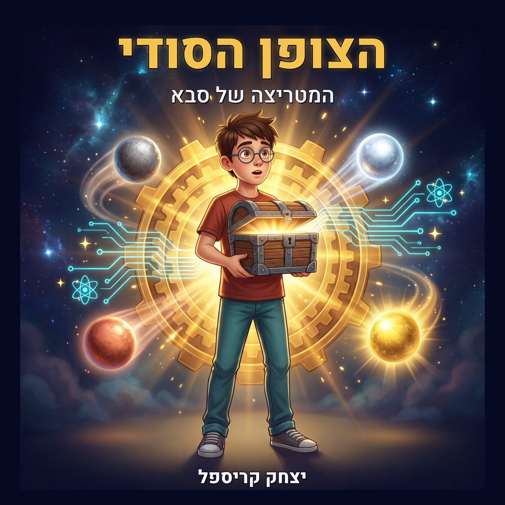
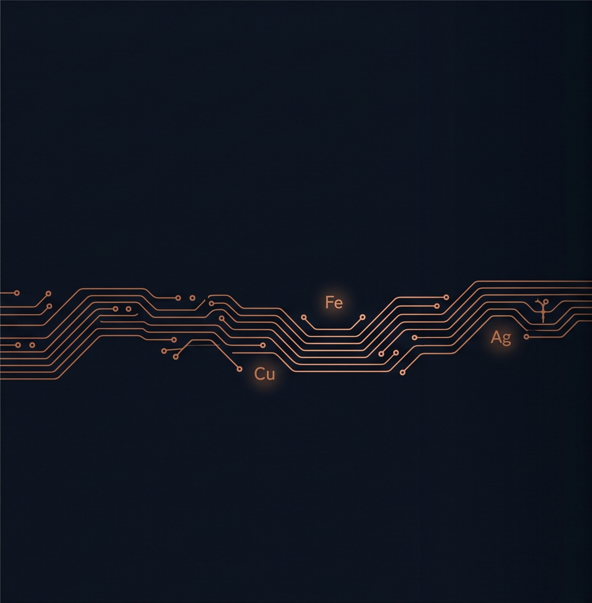
הצופן הסודי
"כל ההתחלות קשות, אבל אחר-כך מעניין יותר"
קוראים יקרים ספר זה נולד בשבילכם, והוא יישא אתכם למסע קסום בתוך המטריצה – אל סודות, צפנים וגילויים על העולם ועל המוח האנושי. בדרככם תעברו חוויות מרתקות כדי לעזור לדרור לפתח את הקוד "זיכרון חיים".
התאזרו בסבלנות ותושייה, בצעו את המשימות לפי הסדר, ואת התשובות רשמו בדף המצורף בסוף הספר. המסע הקסום מתחיל עכשיו…
המפתח הראשון · יסוד הברזל
דרור ישב בחדרו, מביט במסך המרצד, מחשבות על סבא חיים גרמו לו להתמודד. הוא ידע שהזמן דוחק והקוד חייב להיפתח.
"דרורי, ארוחת הערב מוכנה!" קראה אמא רעות, קולה נשמע בחום ובנעימות, מלא במסירות. אך דרור היה עמוק בתוך עולם המטריצה.
אבא שלום נכנס לחדר, מניח יד על כתפו, "סבא תמיד אמר שהסוד נמצא במדפו." הוא הושיט לדרור קופסת ברזל ישנה וכבדה. "מה יש בפנים?" שאל דרור בסקרנות גדולה, "זו התחלה של דרך," ענה אבא בחיוך.
"הברזל הוא הבסיס, הכוח שמחזיק את הכל." דרור פתח את הקופסה ומצא בה דף מקומט, עליו היו רשומים סימנים שנראו כמו קוד מוצפן. "זה קוד לשוני," מלמל דרור, "המורה ללשון תדע." הוא הבין שהמסע לא יהיה רק במחשב, אלא בכל מקום שהלב פועם והמוח חושב.
בבית הספר מתחבא הרמז הבא לפענוח. אמא רעות ואבא שלום הביטו בו בגאווה, הם ידעו שנכדו של חיים ימצא את התקווה.
"צא לדרך," אמרו לו, "ואל תשכח לנשום." דרור הכניס את הדף לתיק והתכונן למחר, הוא הצמיד את הטלפון אל הקוד המסתורי, כדי לצפות במעבדה במבט ויזואלי ומהיר.
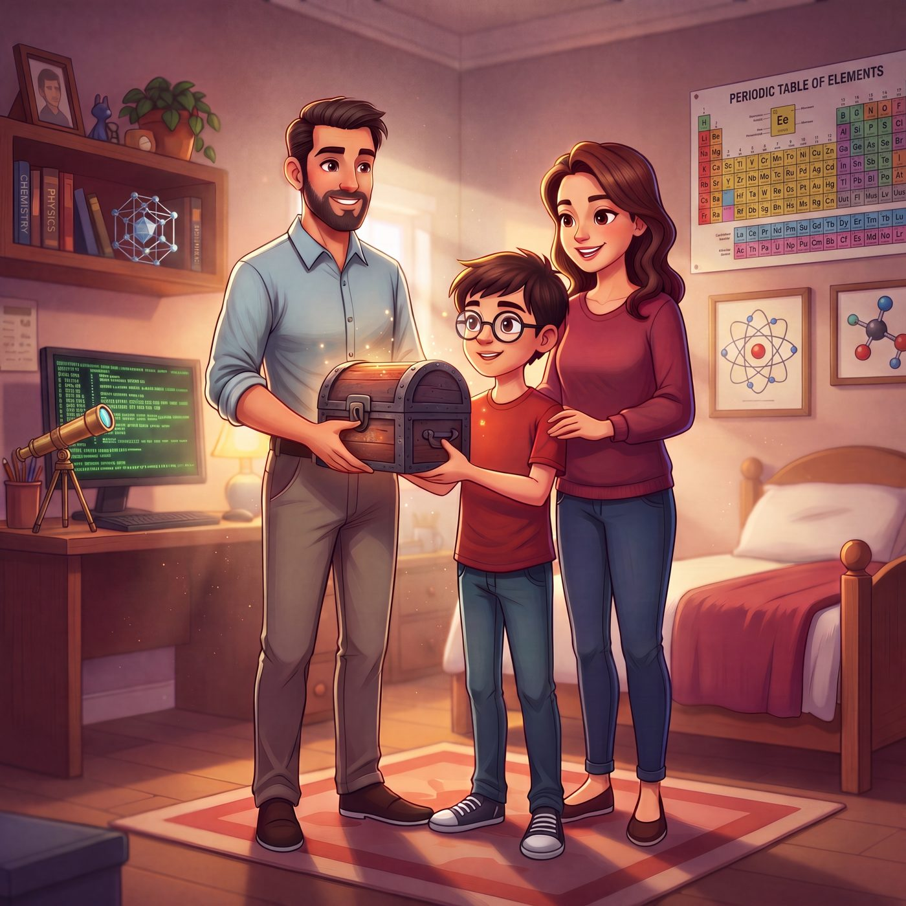
סוד המשפט המבלבל
דרור צעד במסדרון, ידיו רועדות מהתרגשות, הוא חיפש את המוֹרָה ללשון בדריכות ובנחישות. הקופסה של סבא חיים היתה חמה בתוך התיק.
המורה המתינה בכיתה, מביטה בחלון הגבוה, "דרור, ידעתי שתבוא, זה הזמן לבחון ולחקור." היא הושיטה לו דף ישן, סמוק מרוב שנים וזמן. "המילים הן המפתח," לחשה המורה בחיוך רחב, "סבא שלך ידע שהלשון היא כמו אשכול וגפן." דרור הביט בדף וראה רצף מילים מפוזרות.
"הברזל / הזיכרון / בנפש / כמו / האדם / חזק / נשמר" הוא הבין שעליו לסדר את המילים בסדר הנכון, למצוא את ההיגיון שיפתח את דלת הדמיון. המסר הסתתר שם, מחכה ליד שתחבר ותבנה.
דרור הוציא את העט וניגש למשימה הלשונית, הוא ידע שכל מילה היא לבנה בחומת התוכנית. הוא חיפש את הנושא, את הנשוא ואת התאור.
כשהמשפט היה מוכן, הוא חייך בהקלה גדולה, המילה הראשונה של המסר הייתה המטרה הסלולה. הוא רשם אותה במטריצה, במקום המיועד והנכון.
דרור ראה את המולקולה מתחברת, האטומים של הברזל יצרו רשת חדשה ומפוארת. הוא היה מוכן לתחנה הבאה – המעבדה הבוערת.
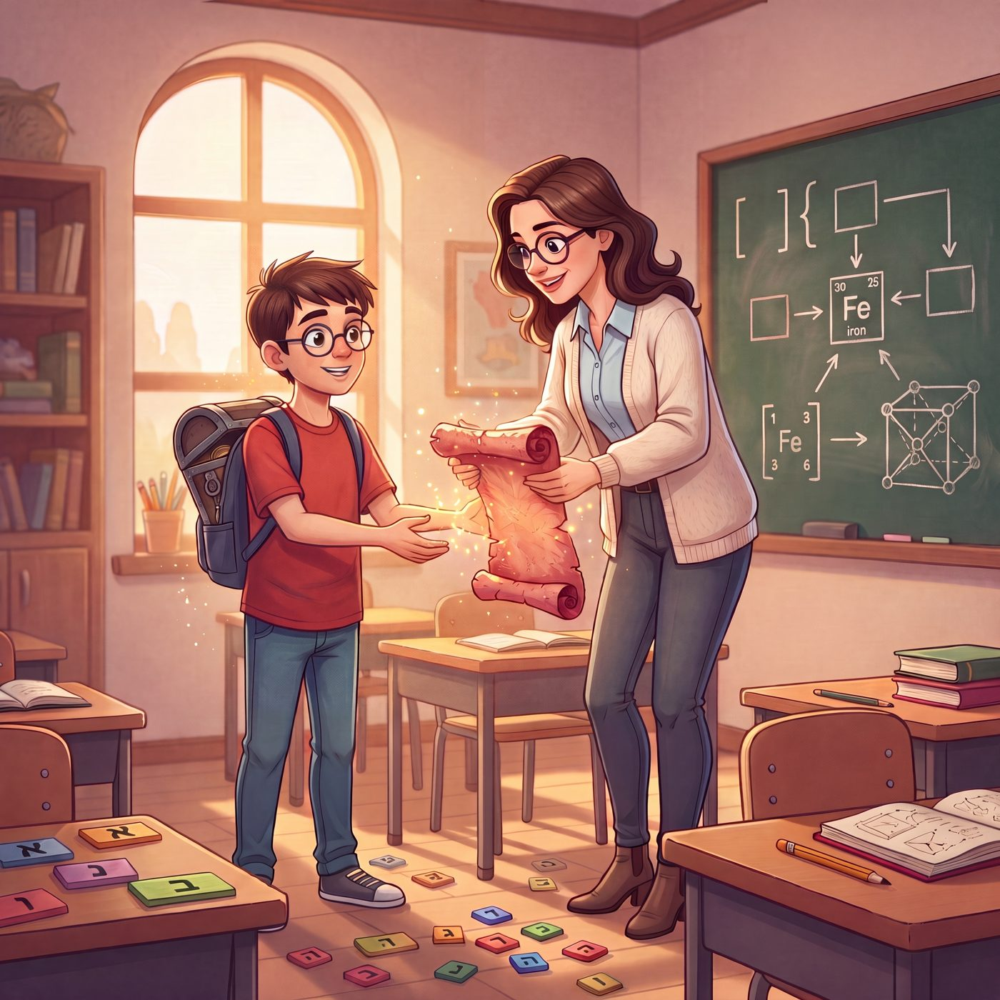
המבנה הנסתר של המתכת
דרור מיהר למעבדת המדעים, ריח של גפרית באויר, המורה למדעים הביט בו במבט חד ומאיר. "כדי להבין ברזל," אמר, "עליך לראות את הסדר." הוא הניח על השלחן דגם של קובייה משונה, נקדות שחרות מחברות ברשת הדומה לפנינה.
"זהו הגביש, דרור, המבנה שנותן לחומר כוח." "אטום הברזל מתגבש בצורה מדוייקת וקבועה," המורה הצביע על הדגם, שנראה כמו חידה קלועה. "ספור את הקודקודים בקובייה הזו, ומצא את הנתון." דרור הביט בקובייה המרחבית (Cube) שלפניו, הוא ידע שהמספר הזה הוא מפתח בעיניו.
כמה קדקודים יש לקובייה אחת שלמה ומסודרת? הוא נזכר בסבא חיים ואהבתו לגיאומטריה, המספר הזה היה השלב הבא בתאוריה.
הוא ספר בזהירות, קדקוד אחר קדקוד במבנה. ארבעה למעלה, ארבעה למטה – זהו המענה.
דרור חייך, הגביש הפך ממושג למשהו מוחשי, הוא רשם את המספר במטריצה באופן חופשי. "הברזל הוא יציב," סיכם המורה וטפח על שכמו, "כמו שהגביש מסודר, כך על האדם לבנות עצמו." דרור הרגיש את המסע הופך לעמוק ומשמעותי.
המולקולה הפכה לגביש מסודר, שלושה תאים מלאים כעת בציר הזמן הנהדר. הוא היה מוכן למצוא את הגוון – הסוד הבא נמצא בספרייה.
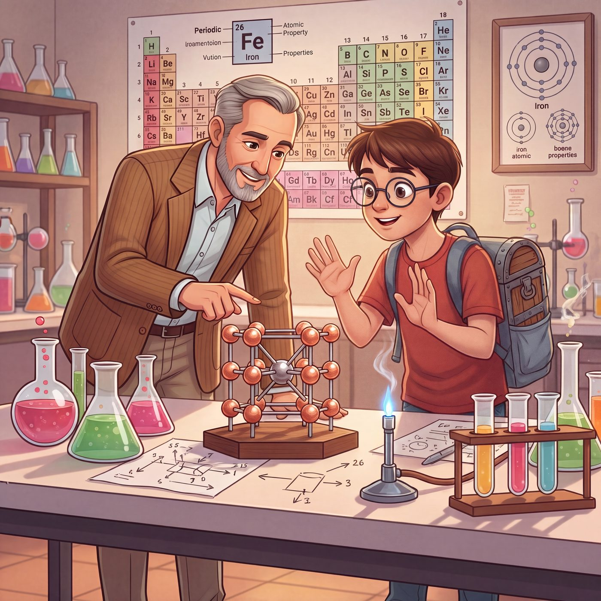
הזהות המתכתית והקוד המחזורי
דרור המשיך לספריית בית הספר, חיפש את הכרך, הסוד של המתכת היה צפון ולא נשכח. הוא הביט בטבלה המחזורית שהייתה תלויה על קיר הספרייה.
המשבצת של הברזל זהרה באור בוהק, "Fe," לחש דרור, "Ferrum – זהו שמו העתיק." הוא חש בכוח של הברזל מתגבר ומעמיק. הוא הביט במספר האטומי שניצב שם בראש, עשרים ושישה אלקטרונים – אין ממה לחשש.
זהו המספר שמגדיר את הלב של החומר. "כל אטום הוא עולם," אמר לו סבא בחלום, "הברזל הוא העמוד שמחזיק את המבנה." דרור הבין שהמספר 26 הוא מפתח חשוב.
הוא השווה בין הסמל הכימי למפת הכוכבים, הברזל נוצר עמוק באדמה ובמחצבים שבסלע. הוא היה צריך למצוא את הצבע של המהות.
"הברזל מכסיף כשהוא נקי," רשם לעצמו בטעות? לא, הוא מבהיק באפור-כסוף, חזק ונחוש.
הוא רשם את הסמל "Fe" במטריצה בחיוך נחוש. היסוד הראשון היה כמעט בידו הקטנה, הוא הבין את הקשר בין המדע לטכנולוגיה.
עוד שלב והמפתח יהיה מוכן, עוד שלב והכל יהיה מובן. הגביש נצבע באפור מטאלי וקר.
הוא היה מוכן למשקל הסגולי – הרמז המתוחכם.
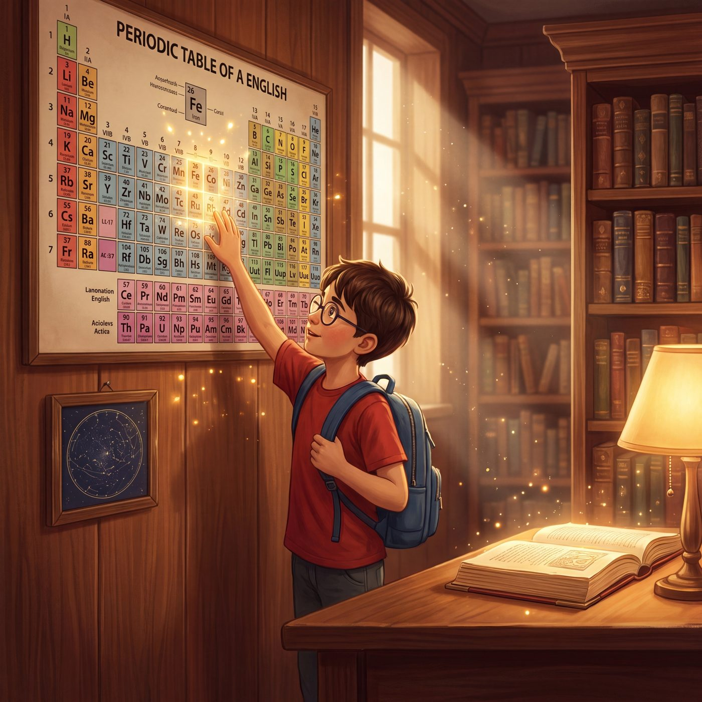
סוד המסה והמפתח הדיגיטלי
דרור ירד למרתף, שם המאזניים הישנים עמדו, הוא הניח את גוש הברזל, והכפות התנדנדו. "כמה כבד הוא הזיכרון?" שאל בקול שקט.
הוא מצא פתק שסבא הצמיד למשקלת הברזל, "הנפח הוא המקום, המסה היא הכמות," דרור הבין שעליו לחשב ולמצוא מספר חדש. הוא טבל את הברזל במים ומדד את התזוזה, הנפח שנדחק גילה לו את סוד הכבידה.
"7.87," לחש דרור, "זהו המשקל הסגולי הנהדר." פתאום בשולי הדף הבהב קוד QR מאתר, דרור סרק אותו בנייד, וחלון הוואטסאפ נפתח. "סבא חיים" הופיע בצ'אט, מחכה למילה החסרה.
הוא שלח את המילה "זיכרון" למספר שקפץ על המסך, "הברזל מאושר!" ענה הבוט במסר עקבי ומסתורי. "עבור כעת לסוד הנחושת," נכתב בחיוך רחב של אימוג׳י.
דרור הרגיש צמרמורת, סבא היה אתו במסע, הטכנולוגיה הפכה לקשר אנושי שלא נשכח. בלילה לפני השינה חשב לעצמו דרור...
מדוע סבא חיים מעביר אותו סדרה של גילויים? האם יש למדע ולטכנולוגיה סוד וקשר למציאות ולחיים.
הוא היה מוכן לפרק הבא – יסוד הנחושת החם.
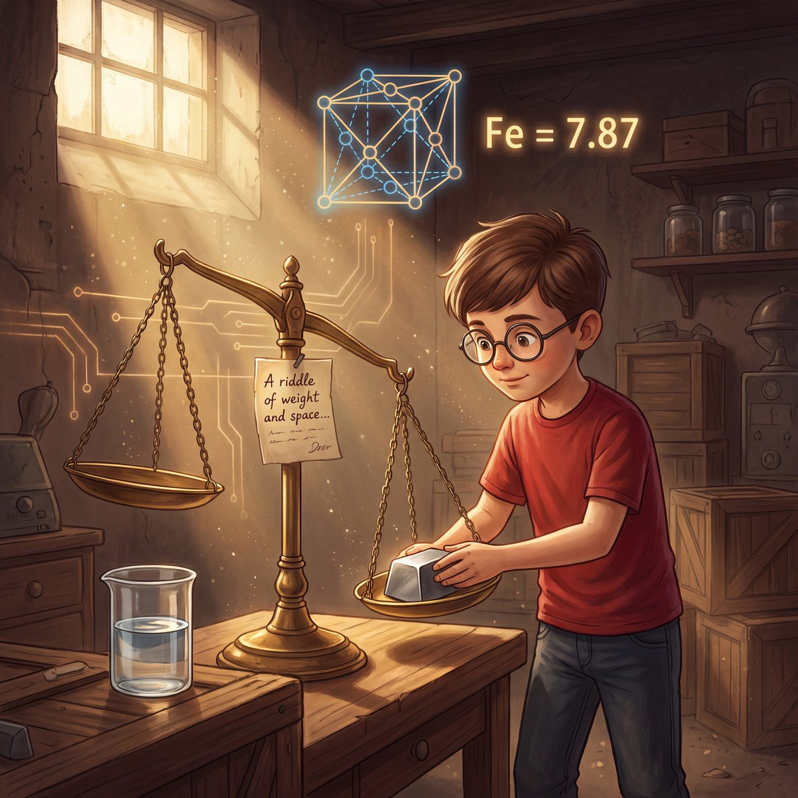
הגשר המוליך · יסוד הנחושת
דרור עלה מן המרתף, המפתח הראשון בידו, הוא הביט במסך המאיר, מרגיש את הכוח לצידו. הברזל היה רק הבסיס, השלד החזק והקשה.
הוא נכנס למטבח החם, שם אמא רעות הכינה תה, קנקן ישן מנחושת זוהר, כמו שמש שמתחבאה בשדה. הגוון האדום-כתום הבהב, מזכיר לו להבה של אש.
"זה הקנקן של סבתא חנה," אמרה אמא בקול רך, "היא תמיד אמרה שנחושת היא הגשר המברך." דרור התקרב וראה על הידית חריטה עדינה. פתאום המטריצה בטלפון החלה לרעוד ולפעום, אותיות חדשות הופיעו, מבקשות את מקומן היום.
"הנחושת מוליכה את האור," נכתב שם בזוהר כתום. אבא שלום נכנס בדלת, נושא כבלי חשמל דקים, "הכל מחובר בחוטי נחושת, מן האדמה ועד עמודי החשמל." דרור הבין שהיסוד הזה הוא זה שמעביר את החום והזרם החשמלי.
הוא חשב על החופש של האש, על הזרם החשמלי שזורם, הנחושת היא התנועה, הקשר שמתהווה וגורם. מן התקופה העתיקה ועד למחשב המתקדם.
"צא לחצר בית הספר," לחש אבא במבט נבון, "שם פסל הפעמון מסתיר את הרמז הנכון." דרור הצטייד בסורק קודים, מוכן לפענח עוד סוד. היסוד השני המתין לו בחוץ, בחום ובבהירות, נחושת שמתחמצנת בשמש, מספרת על התחברות.
הוא יצא אל הדרך החדשה, מלא בסקרנות.
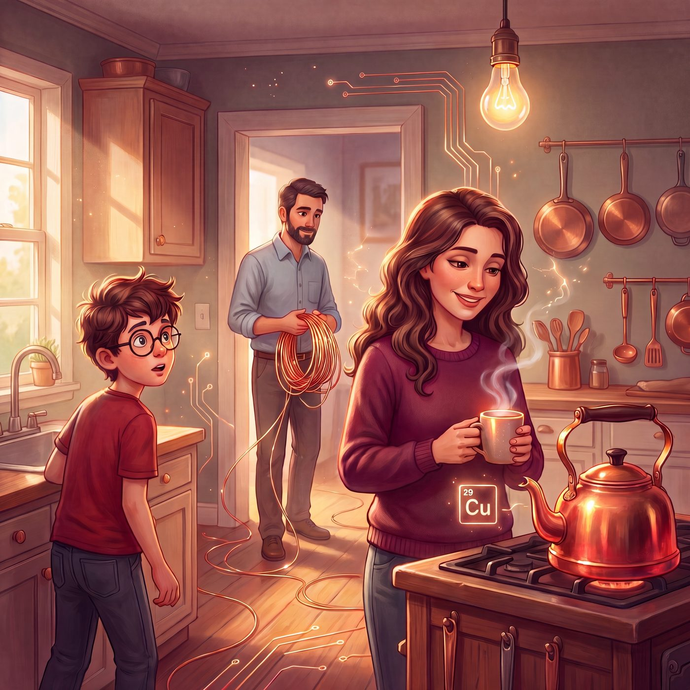
הפסל הירוק והזמן העתיק
דרור יצא לחצר בית הספר, השמש ליטפה את הכל, שם עמד פסל ברונזה עתיק, ירוק, כבד וגדול. המורה להיסטוריה המתין במקום, נשען על המסד.
"אתה רואה את הירוק הזה?" שאל המורה במבט חד, "זה הוא החמצון של הנחושת, הזמן שחלף ונצרב בחומר." הוא הצביע על לוח מתכת קטן שהיה קבוע בבסיס. "כדי לגלות את המילה הבאה, עליך להיות רגיש," אמר המורה והושיט לו מטבע עתיק אדום ומרשים.
"הנחושת היתה הכסף של העולם בימים הקדומים." דרור הביט במטבע וראה חריטה של צמח הגפן, מתחתיו היו רשומות שלוש אותיות בכתב ישן ולא מובן. החידה של המורה הייתה טמונה בתוך ההקשר הזה.
"מהו השם של התקופה שבה האדם למד להתנסות?" שאל המורה, "תקופה שנקראת על שם החומר שהיה נפוץ בעולם העתיק." דרור חשב על הזמן שבו הנחושת והברונזה שלטו. הוא נזכר בדף ההיסטורי שבו העמים התפתלו, תקופה שמחברת בין האבן לברזל באופן כה יפה.
הוא הבין שזהו השם שעליו לרשום, זה המענה. דרור רשם את התשובה במטריצה החדשה שלו, הוא ידע שהנחושת היא הגשר לזמן שעבר במסלולו.
הוא חייך אל המורה והמשיך לתחנה הבאה בסדר. בתחתית הדף, האטומים של הנחושת החלו להתחבר, המולקולה החדשה נוצרה, מוליכה חום שלא יגמר.
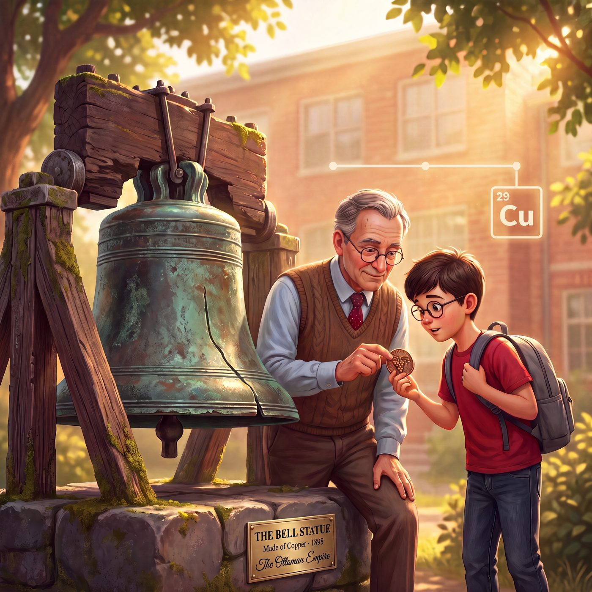
המוליכות המופלאה וסוד הגביש
דרור חזר למעבדה, שם המתין לו המורה למדעים, על השולחן נחה סוללה וניצנוץ של אור בוהק. "הנחושת היא הדרך המהירה," אמר המורה בחן.
הוא הראה לדרור את הגביש, שנראה כמו רשת צפופה, "כאן האלקטרונים נעים בחופשיות, בתנועה כה דחופה." הגביש של הנחושת מסודר במבנה שנקרא "ממרכז פנים". "בכל פאה של הקובייה יש אטום," כמו בימים הישנים," המורה המשיך, "אך יש גם האטום במרכז כל דופן וקיר." דרור הביט בדגם, מנסה למצוא את המספר המאיר.
לקובייה יש שש פנים, ובכל אחת מהן נמצא אטום, דרור ספר את הנקדות שזהרו בכתום ובאדום. "המספר הזה הוא כמות הדפנות," לחש לעצמו בשקט.
הוא הבין שזהו הקוד שהמטריצה כעת מבקשת, המבנה הזה הוא שמאפשר לחשמל לזרום כמו חץ בתנועה. הוא רשם את המספר בדף, מרגיש את הזרם עובר.
"כשהאלקטרונים חופשיים, החום והאור מתחברים," סיכם המורה, "הנחושת לא שומרת דבר רק לעצמה." דרור חשב על הנדיבות של החומר, על הנתינה החכמה. הוא ידע שהחלק השני בפזל המדעי כבר מוכן, הגביש התגבש בתוך המחשב, מדויק ומתוזמן.
הוא היה מוכן לתחנה הבאה – זהות המתכת. דרור המשיך לספרייה למצוא את שם המתכת באותיות לטיניות ואת המספרים המאפיינים אותה.
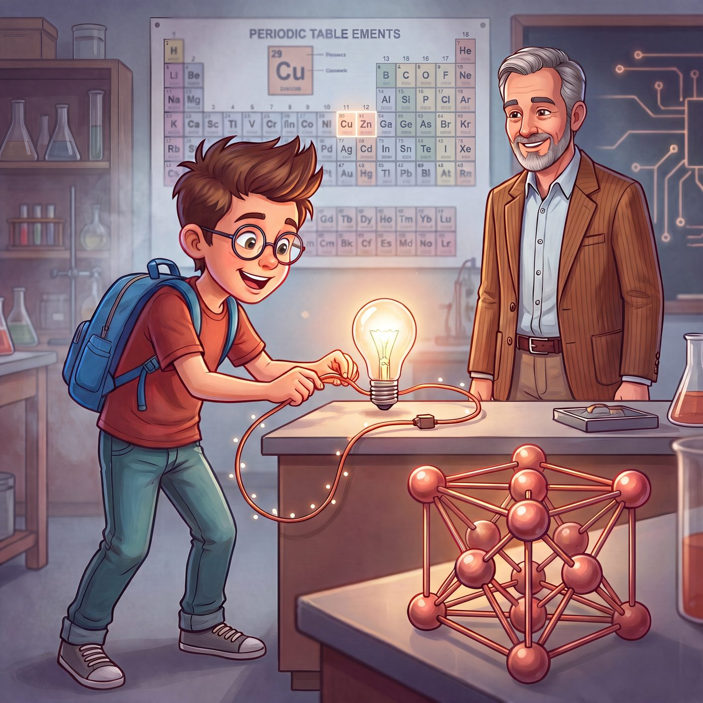
סוד המסה הדיגיטלית והקוד הנסתר
דרור הוציא את הטלפון, המצלמה נדלקה במהירות, הוא סרק את לוח הנחושת בדיוק ובזהירות. פתאום, על המסך, החומר הפך למבנה של נתונים.
הרכיבים האלקטרוניים החלו לזרוח בפנים, "הנחושת היא הדרך שבה המידע עובר לשכנים." הוא ראה את הזרם הדיגיטלי פועם בתוך הקו. "כדי למצוא את המשקל הסגולי," נכתב על הצג, "עליך לפתוח את הקובץ החסום והמוצפן." דרור הקליד את המספר האטומי כסיסמה למעבד.
המסך הבהב בירוק וחשף את הנתון המיוחד, שמונה נקודה תשעים ושש – זהו מספר מיוחד. המסה של הנחושת כבדה מן הברזל בכל מעבד.
דרור רשם את הנתון 8.96 במטריצה הזוהרת, הוא הבין שהטכנולוגיה והמדע הם שרשרת. היסוד השני הושלם, הגשר המוליך כבר בנוי.
הוא חש את החום של הנחושת בכיס, כמו רמז צפוי, המפתח הבא יהיה מבהיק וכסוף כמו הלבנה. כעת היו לדרור שתי מתכות שיעזרו לו בעתיד לבנות ולהמציא המצאות.
זה המסע שסבא חיים רצה ללמד את דרור, כי המטרה הסודית עוד לא ברורה. דרור היה מוכן לכסף – היסוד של ההשתקפות והבינה.
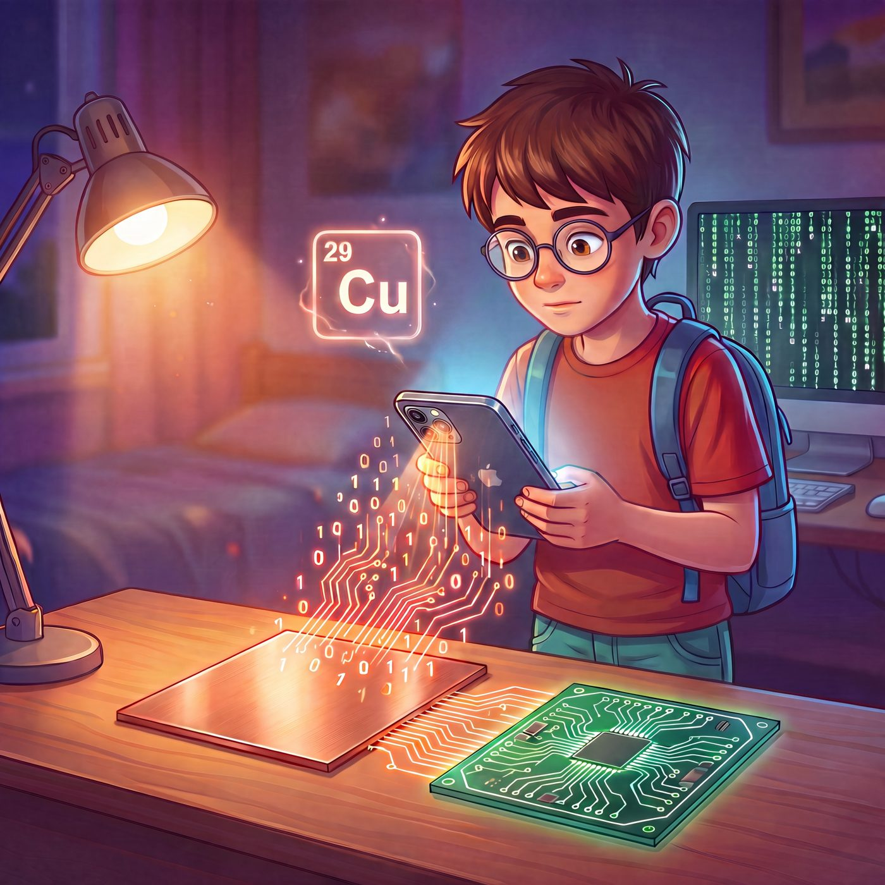
ההשתקפות הנקייה · יסוד הכסף
דרור הביט במטריצה, שני יסודות כבר האירו שם, הברזל והנחושת יצרו בסיס איתן ומפרסם. אך כעת, המסך הפך לבהיר, כמעט כמו מראה.
הוא נכנס לחדר של סבא, שם הכל נשאר במקומו, על המדף עמדה חנוכייה מכסף, מפיצה את קסומו. הנקיון של המתכת הזו היה מסנוור וטהור.
"הכסף הוא האמת," נזכר בקולו של סבא החכם" הוא מחזיר את האור בדיוק, לא מחסיר דבר לעולם." דרור הושיט יד ונגע במתכת הלבנה בוהקת וזכה. פתאום הטלפון רטט, הוואטסאפ שוב נפתח למרחב, הודעה חדשה מסבא: "הבט דרך העדשה עכשיו." "הכסף מסתיר דברים שהעין לא תראה במקרה." דרור הרים את המצלמה וכוון אותה אל הדף הבא, המסך החל לעבד נתונים, יוצר מציאות כה מופלאה.
הוא ראה אטומים של כסף מרחפים מעל הנקדה. "זהו יסוד המוליכות הגבוהה ביותר," קפצה ההודעה, "הוא מבהיק יותר מכל מתכת, כמו כוכב בגלקסיה." דרור הבין שהמסע הזה הופך לשיקוף של הנשמה.
הוא היה מוכן לפענח את סמל היופי והטוהר, הכסף יעזר לו לראות את הדרך ולמצוא את האור. הוא צעד אל החידה הבאה, מלא בכוח רצון והתמדה.
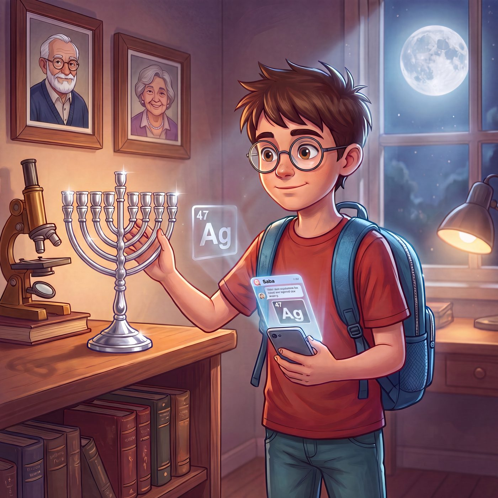
המטבע הלטיני וסוד הכסף
דרור הביט בחנוכייה וראה עליה חותם קטן, הוא פתח את הוואטסאפ ושאל את הבוט המלומד: "מהו השם שהכסף נשא כבר לפני זמן רב ועתיק?" התשובה הגיעה במהירות, בקול צלול ומדהים: "חפש את המילה הלטינית שממנה נולד הסמל Ag," "היא מספרת על הלבן הבוהק, על האור שאינו חג." דרור הקליד את האותיות במטריצה הדיגיטלית שלו, הוא ידע שהשם Argentum הוא המפתח במסלולו. המילה הזו הפכה לשם של ארץ רחוקה ודרומית – ארגנטינה.
הוא חשב על הכסף כעבר וכעתיד בשפה העברית, הן מתכת והן מטבע, כח שמניע את הכל בתכלית. הוא רשם את השם וראה איך הכל מתחבר על הדף.
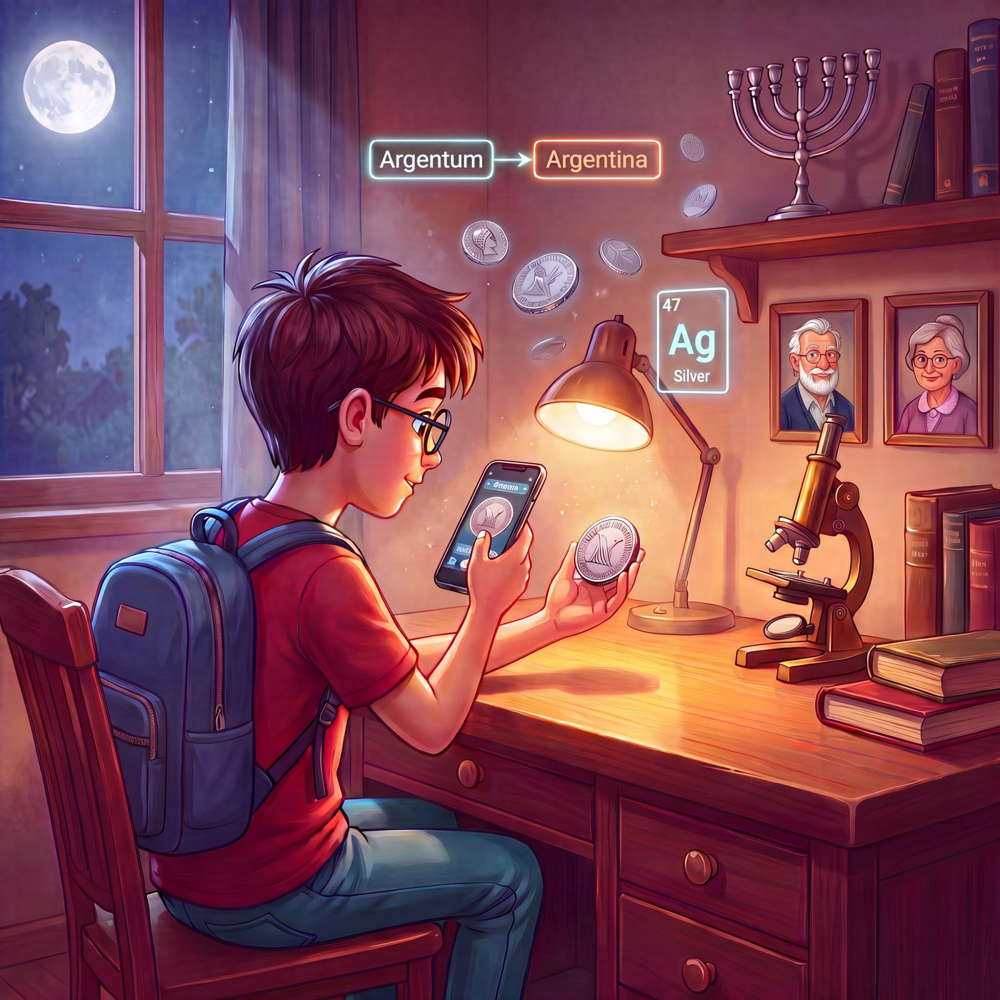
המוליך המושלם וסוד המבנה
דרור לומד ומתנסה בעולם המדע, במתכת שאין לה מתחרה, הכסף מעביר חשמל ללא מעצורים. הוא פתח את הוואטסאפ ושאל: "מה הופך אותו לנבחר?" "המבנה הגבישי שלו," ענה הבוט, "הוא סוד ההצלחה," "כמו הנחושת, גם הוא מסודר בקובייה ממורכזת במתיחה." דרור ראה על המסך אטומים שרוקדים בשמחה במבנה סימטרי ויפה.
הוא הבין שכאן האלקטרונים נעים בחופשיות מוחלטת, ללא התנגדות, ללא עיכוב, בזרם שאינו נשלט. הכסף הוא המלך של החום, המוליך שאינו ממעט.
אך בגלל מחירו היקר, הנחושת זכתה בתחרות הקשה. הוא רשם במטריצה את הנתון המדעי המדויק, הכסף מעביר אנרגיה באופן כה חלומי.
הוא היה מוכן לגלות את הסמל שלו במדע דרך הטבלה המחזורית.
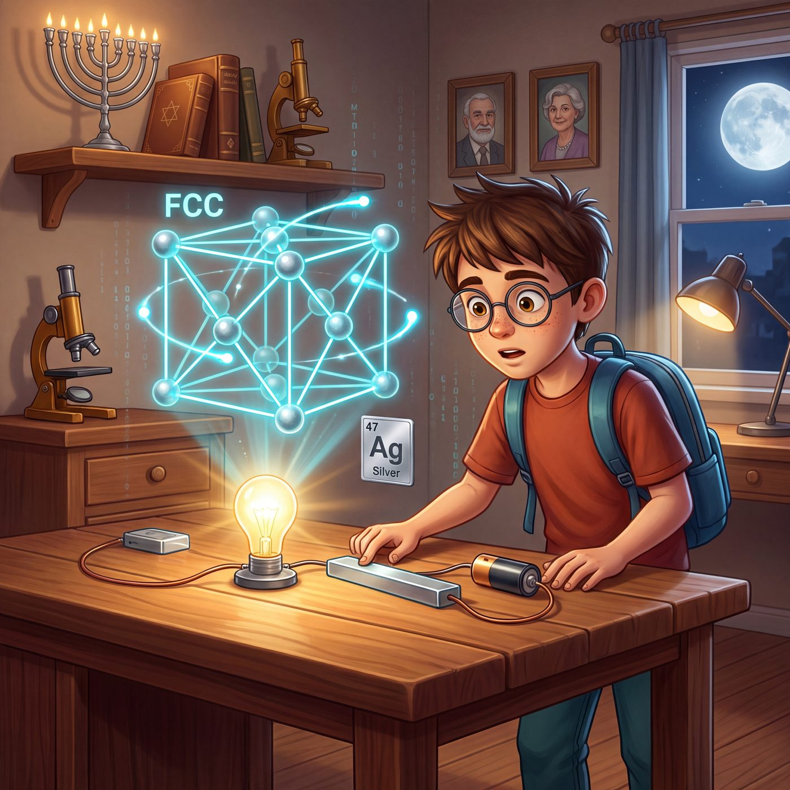
הסמל הלבן ומספר הבבואה
דרור הביט בטבלה המחזורית שעל המסך הדיגיטלי, הסמל Ag זהר בלא הרף, באופן כה חלומי וממשי. הוא חיפש את המספר האטומי, הקוד שלו הפנימי.
"ארבעים ושבעה," לחש, "47 אלקטרונים במעגל הפנימי." הוואטסאפ צפצף שוב: "הכסף הוא רקדן של אור ובבואה," "בעבר, בלא דיגיטל, הוא יצר את התמונה השלמה." דרור נזכר במצלמות הישנות, בסרטים של פעם, מלחי הכסף היו אלו שלכדו את הרגע והקסם על השקף שדרכו נוצרה תמונה מצילום ישן. היסוד הזה הוא הלבן הכי נקי שהטבע יכול לרקום.
הוא רשם את המספר 47 במטריצה שלו בדיוק, מרגיש איך הכסף מחבר בין המדע לאמנות התיעוד והצילום. הדף הפך למבהיק וחלק, מוכן ליסוד הבא בשורה.
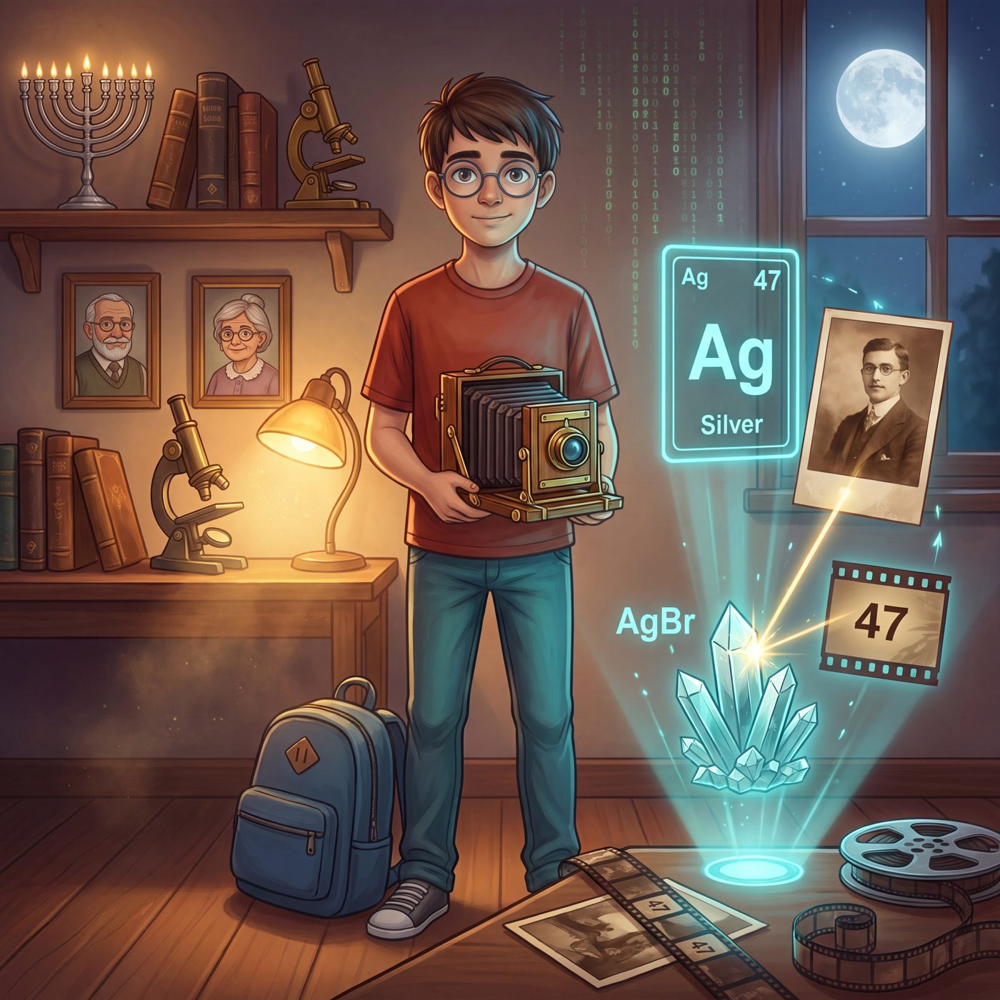
סוד ההשתקפות ומסת הטוהר
דרור הביט בחנוכייה והבין שהכסף כבד מן הנחושת, הוא הפעיל את המצלמה, מחפש את זווית הצילום המתאימה. הוואטסאפ שלח לו קישור לעדשה של "מציאות רבודה".
הוא כיוון את הטלפון אל המתכת, והמסך החל לרעוד, מספרים צפו באוויר, חשופים לעין שרוצה ללמוד. "עשר נקודה ארבעים ותשע," קפץ הנתון מתוך הסוד.
דרור הבין שזוהי המסה הסגולית של הכסף הנקי, הוא הקליד 10.49 במטריצה, "מרגיש את הקשר האופקי. היסוד השלישי השלם, מבהיק וחלק באפן ממשי." "הכסף הוא הראי," כתב לו סבא בהודעה האחרונה, "עכשיו עליך למצוא את המלך, זה שאינו משנה הבנה."
סבא חיים אהב אתגרים. הוא ידע שצריך לחבר בין חומרים, מספרים, תושייה ואתגרים.
כך רצה להנחיל לדרור כלים משני חיים. הוא ידע את הסוד שהעתיד הטכנולוגי חייב לעבור לדורות הבאים.
דרור ידע שהיסוד הבא הוא הזהב – התחנה העליונה.
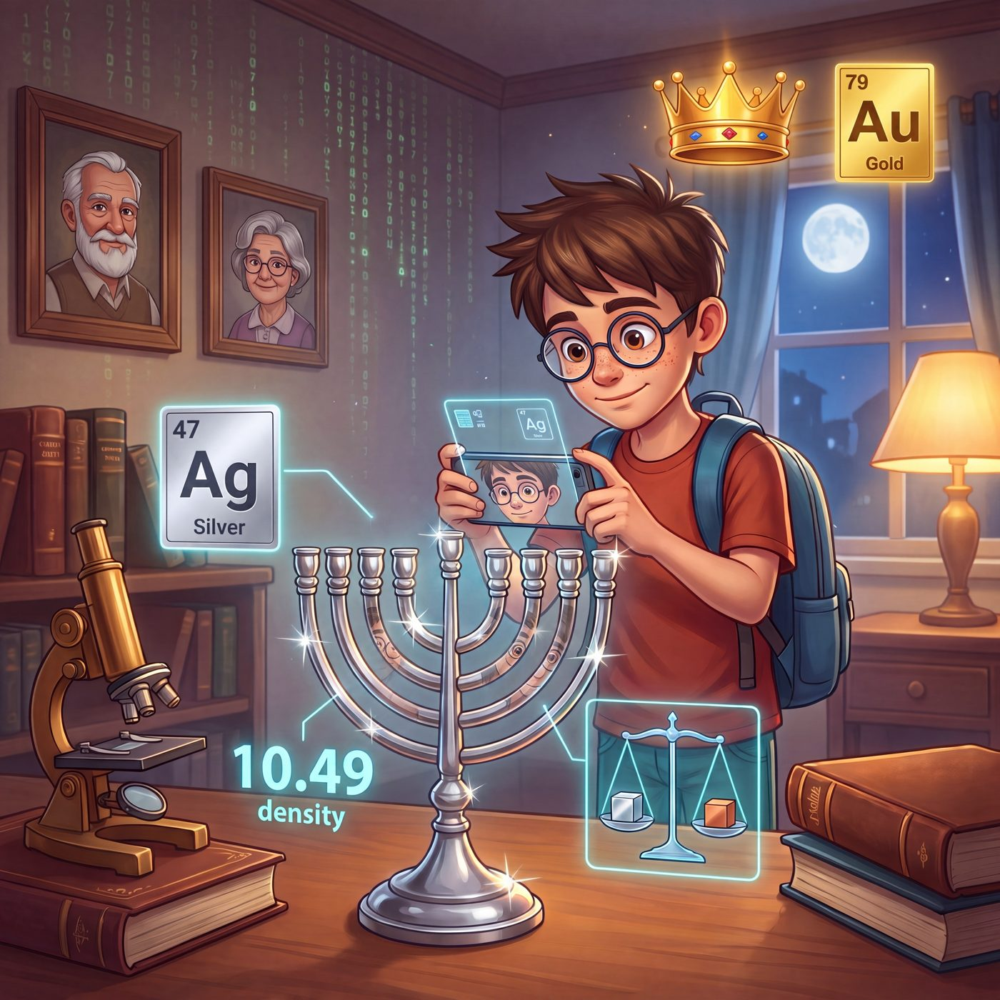
המסע אל המכון · יסוד הזהב
המכונית העמוסה עשתה את דרכה אל הרי הגליל הגבוהים, המשפחה יצאה לטיול בין נופים ירוקים ופרחים מזהיבים. אך דרור ידע שהיעד אינו מלון, אלא מכון חקר המוח המסתורי.
"סבא צריך בדיקות," אמרה אמא בקול שנשמע קצת חרישי, דרור הביט בסבא חיים, שחייך אליו חיוך רחוק ואישי. הוא הבין שהזיכרון של סבא נעלם, נמס כמו קרח בשמש החמה.
בידו החזיק את המטריצה, הטכנולוגיה שנותרה בו כנחמה, "הזהב הוא התחנה האחרונה," הרהר בזמן שהנסיעה התקדמה. כשהגיעו למכון הלבן, הוא ראה מכשירים מיוחדים.
הוואטסאפ רטט בכיסו: "כאן נמצא הקוד שיחזיר את הטוב." "חפש את החומר שאינו מחליד, זה שנשאר יציב וקרוב." דרור הבין שהתגלית של סבא מחכה לו בין הקירות הקרים. הוא נכנס למעבדה בזמן שהמשפחה נחה בין החדרים, הזהב היה שם, בתוך השבבים הזעירים של המחשב המדהים.
הוא היה מוכן לפתוח את השער לכספת שמעבר למילים.
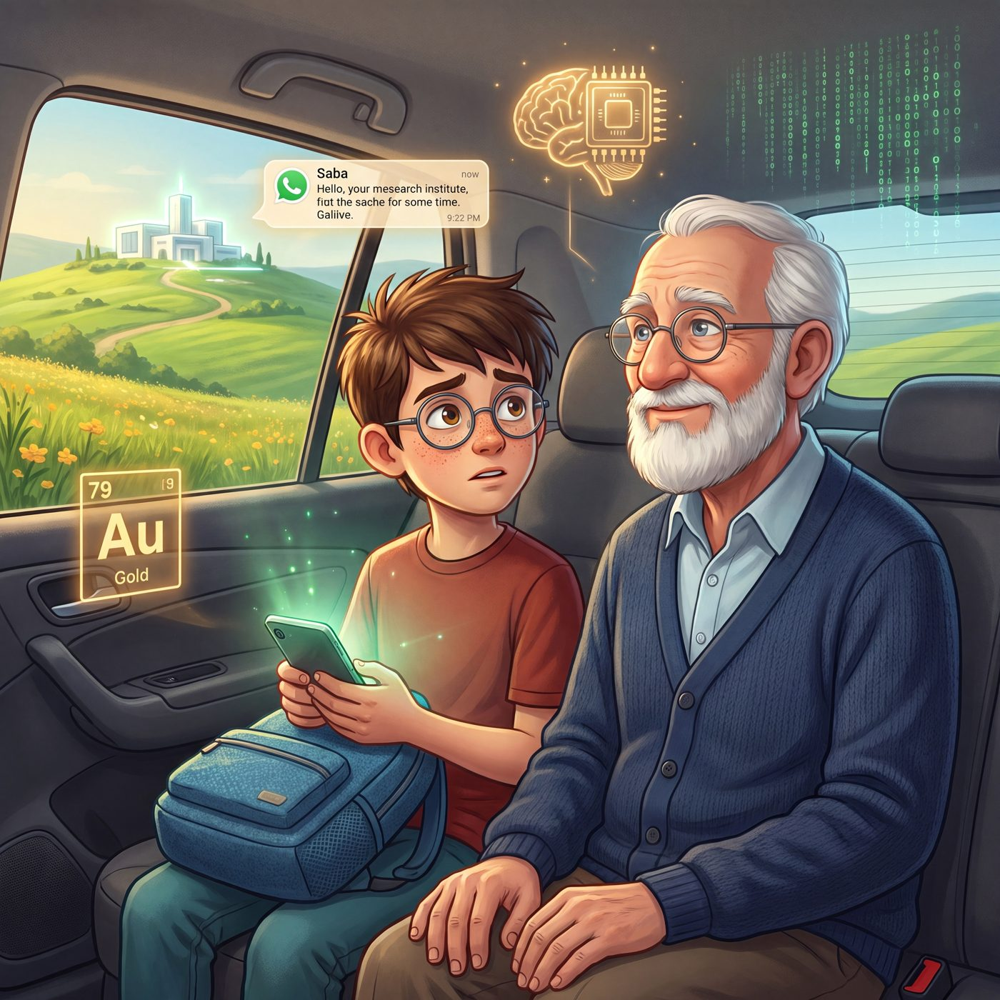
המבנה הגמיש וסוד הרקוע
דרור הביט בזהב הנקי, המתכת הכי רכה וגמישה, הוא פתח את הצ'אט בניד, והבוט שלח לו תחושה: "את הזהב ניתן לרדד לעלה דק משערה, ללא חשש." "מהו המבנה שמסתיר את הכוח הזה?" דרור חקר את הגביש, את המבנה הקובייתי המושלם, הוא הבין שגם המוח של סבא היה כזה – גמיש ונעלם. הוא רשם במטריצה את המבנה שמחזיק את הכל, FCC (קובייה ממרכזת פנים), כך הזהב בנוי.
הוא הרגיש איך הפאזל נשלם, המפתח משאיר חותם. המסע הפך לעמוק, מתוך המבנה צפו הזכרונות, הזהב לא נשבר, הוא רק משנה צורה ונשאר לדורות.
דרור ידע שהוא קרוב לסוף, לגילוי התובנות.
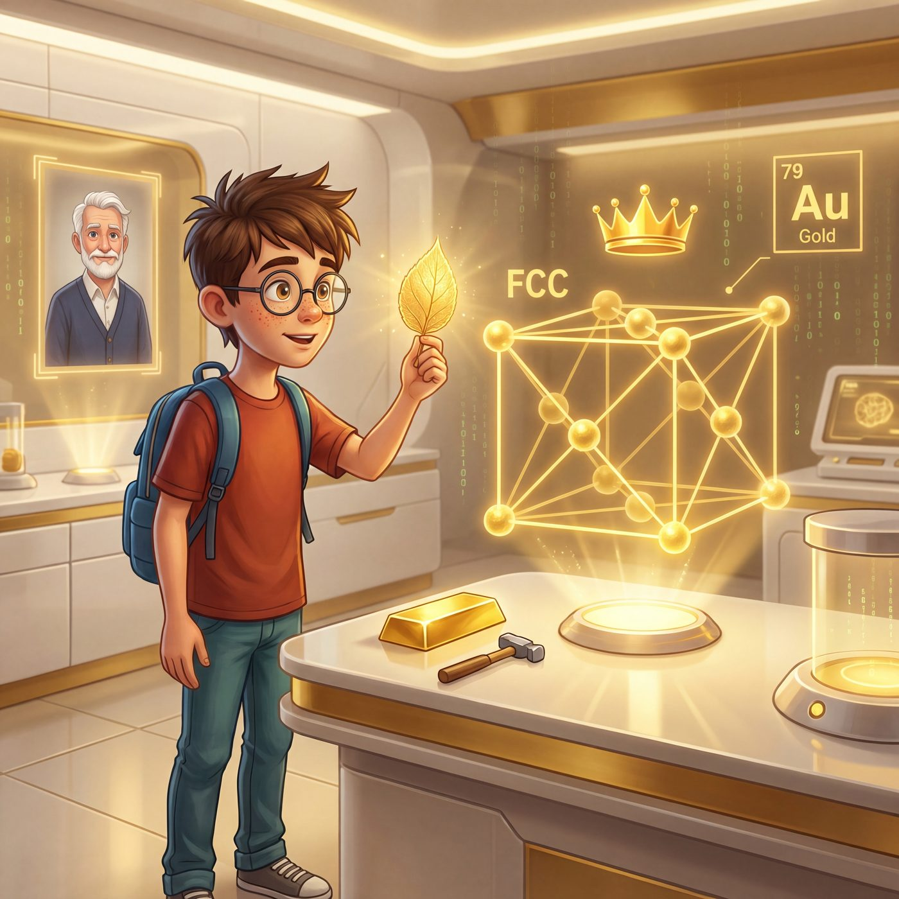
הסמל הנצחי ומספר הזיכרון
דרור הביט במסך של מכשיר ה-MRI במכון המשוכלל, הוא ראה את הזהב מאיר בחישנים, מגן על המח מכל נזק. "79 אלקטרונים," לחש, "זהו המספר שאינו נמחק בגלגל." הוואטסאפ רטט, והודעה מסבא הופיעה כמו חלום ישן: "הזהב אינו מחליד, דרור, הוא נשאר טהור בכל זמן." "גם כשהזיכרון שלי נחלש, הידע שלך יהיה לבסיס איתן." דרור הבין שזו התגלית: זהב בשבבים שמחזקים את המחשבה, טכנולוגיה שתעזר לסבא ולכל מי שאיבד את הזיכרון וכוח המחשבה.
הוא רשם את המספר 79 במטריצה, דמעה בעינו נרטבה. הוא ידע שהקוד הזה הוא יותר ממספר אטומי פשוט, זהו השער לכספת, לתגלית שתמנע את הטשטוש והטעות.
ברגעים אלו שסבא על מיטת המכון, דרור יודע שסבא שלו מאבד את הזיכרון. בליבו נולד חזון!
יום יבוא והוא יהפוך למדען שימצא את הפתרון למחלה זו. הוא ירפא את סבא ויסייע לאנושות למצוא מרפא לשכחה.
הוא הבין שהוא צריך להמשיך את מפעל החיים של סבא — מזיכרון אבוד לזיכרון חיים.
הכל מוכן לרגע האחרון – למספר המסה ולפריצה בנחישות.
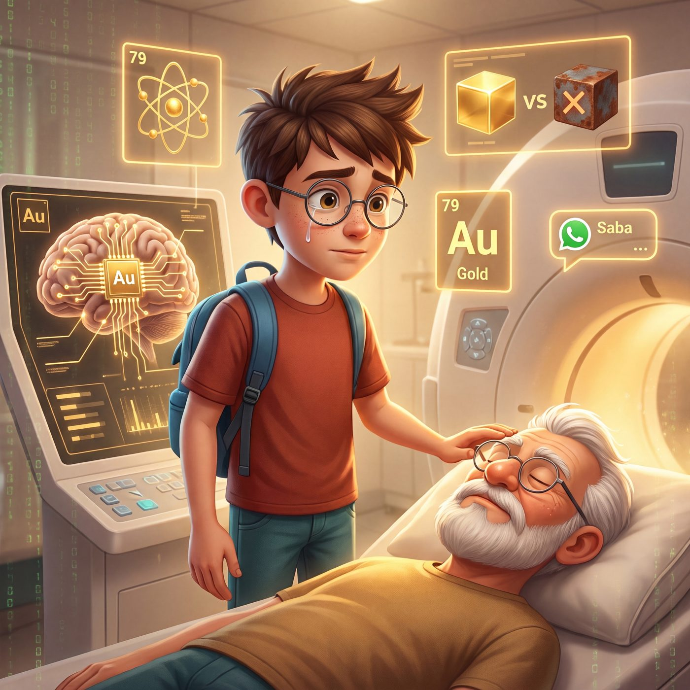
תור הזהב - השער האחרון
דרור הניח את מטיל הזהב הכבד על המאזנים במכון, המשקל הסגולי 19.32 הבהב בצג, חזק ונכון. פתאום הוואטסאפ רטט בעוז: "הגעת לשער האחרון!"
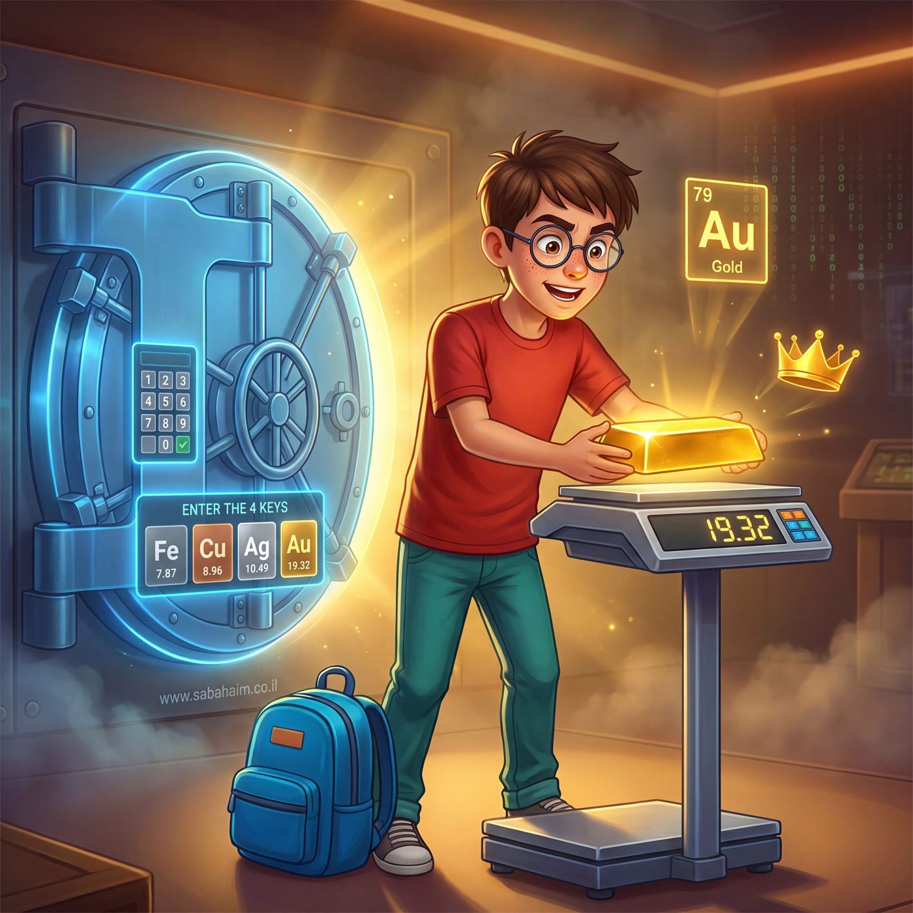
פריצת הכספת
הוא קיבל קישור לאתר הכספת:
www.sabahaim.co.il
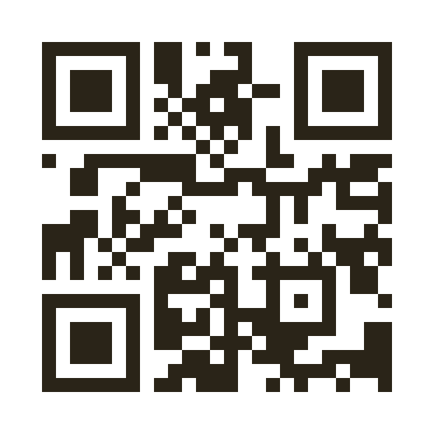
על המסך הופיעה דלת פלדה, נעולה ואטומה. "הקלד את ארבעת המפתחות," ההודעה הייתה ברורה.
דרור הקליד ברעדה את רצף המסות שאסף בדרך:
ברזל, נחושת, כסף, זהב
צליל של מנעול נפתח הדהד, והדלת נעה באיטיות. בפנים חכה הגביע הדיגיטלי: התגלית לחיבור המוח, שבב הזהב שישמור את זיכרונו ויתן לו כוח.
דרור ידע שהוא צריך להשתמש במדע חדש כדי לשכלל את השבב. דרור חייך, המדע והאהבה הצליחו לנצח.
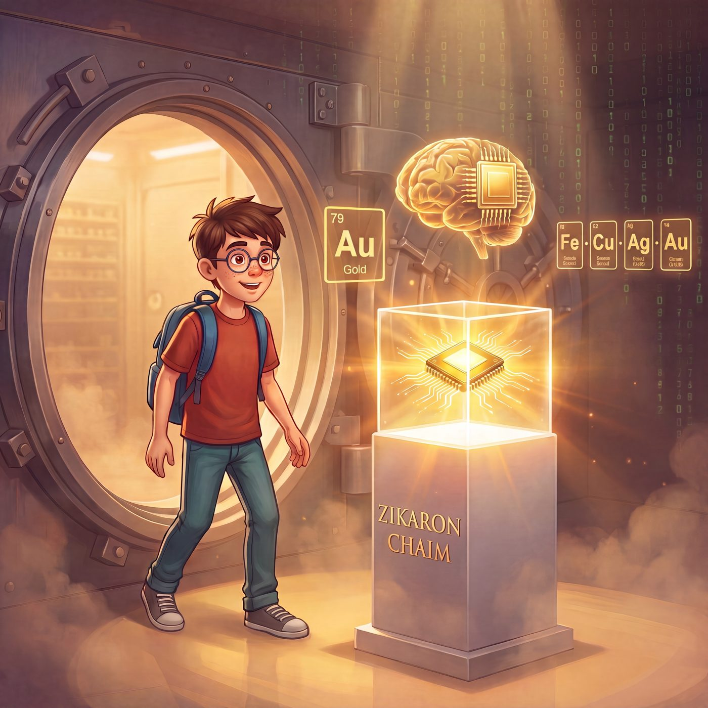
המחלה והמטרה
סבא חיים חלה באלצהימר, מחלה שמוחקת את הזיכרון כמו דיו שמתאדה. הוא העביר את דרור סדרה של גילויים כדי לאמן את מוחו של הנכד לחשוב כמדען, אך גם לוודא שיהיה לו הידע לשפר את השבב, להמשיך את המירוץ שסבא לא סיים.
סבא חיים, במוחו המתנוון, ראה את עתיד המדע בנכדו. הוא רצה שדרור יהיה הדור הבא שישלב בין שבבים, בינה מלאכותית ורפואה.
הוא חלם שחלומו יתגשם, מבלי לדעת שדרור כבר הגה את החלום הזה כשהיה במכון.
יום יבוא וחלומותיהם ייפגשו.
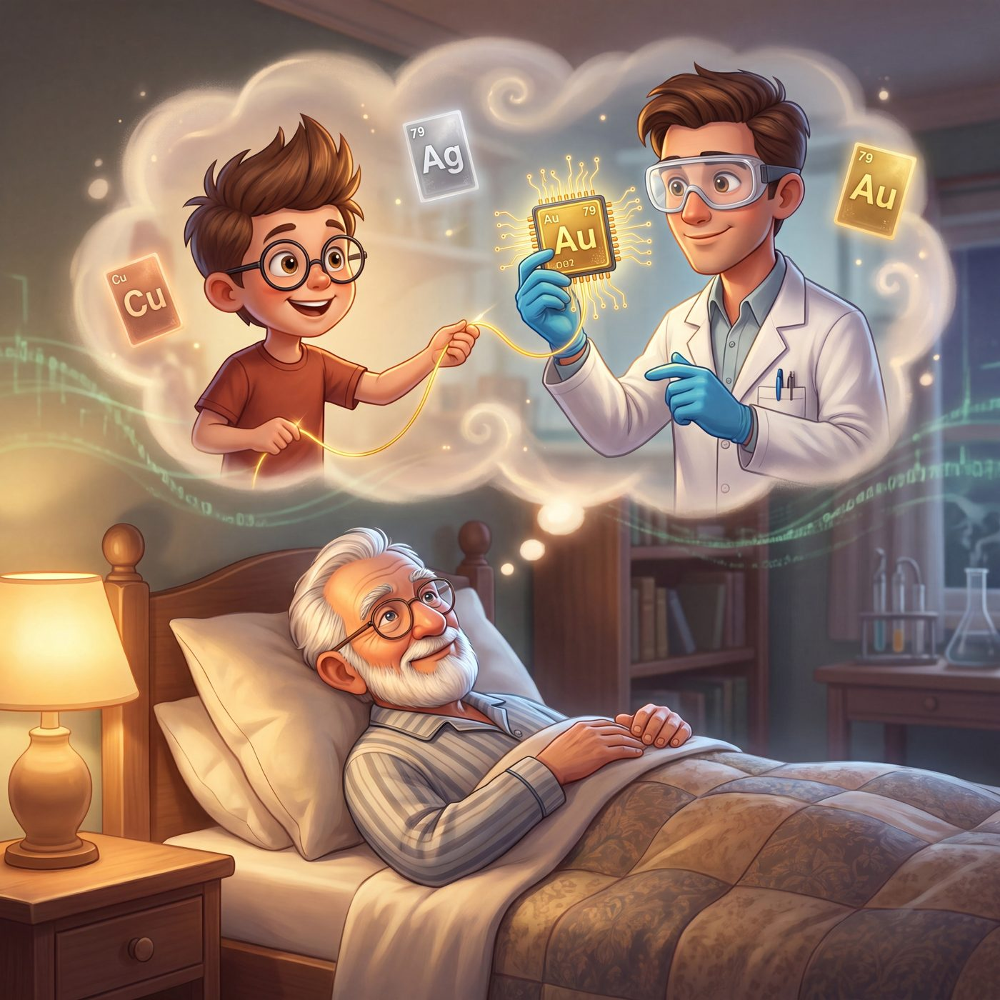
התגלית — הגביע הקדוש
בכספת נחשף פיתוח טכנולוגי מדהים: "שבב הזהב המוליך". זוהי מערכת עצבית מלאכותית שמשתמשת בתכונות היסודות (הברזל למבנה, הנחושת לחשמל, הכסף לדיוק והזהב לעמידות) כדי לגשר על תאי מוח פגומים באמצעות חיבור שרירי עצב לפולסים של חשמל מבוקר.
סבא המציא גרסה ראשונה לתרופה המשלבת טכנולוגיה למחלה שלו, אבל היא צריכה שדרוג נוסף כדי להציל את האנושות.
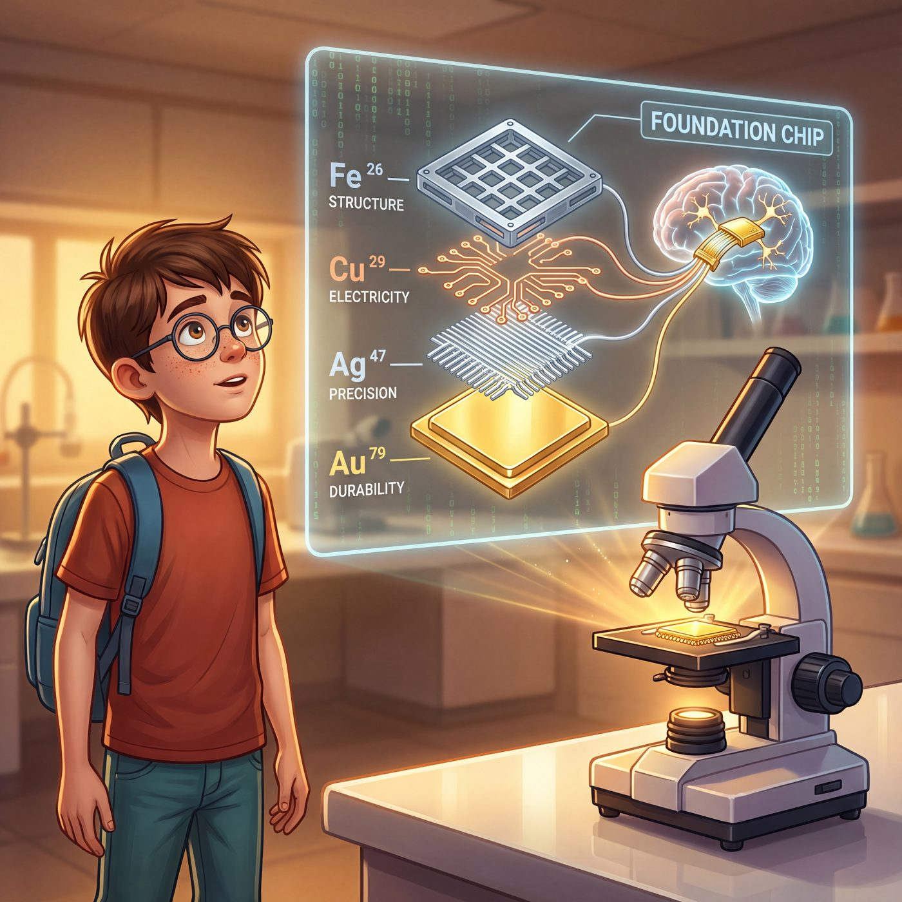
המכתב מתוך הכספת: הזיכרון שלא ימחק
"דרור יקר שלי, נכד אהוב ומדען צעיר, אם פתחת את הדלת הזו, זה סימן שהיית זהיר. המחלה בראשי היא כמו חלודה שאוכלת את הברזל, היא משבשת את הזרם, הופכת את הזיכרון לצל.
המטריצה הייתה הדרך שלי לאמן את מוחך המופלא, כדי שתמשיך את המחקר שבו התחלתי, ללא הפסקה. השבב שבכספת הוא התגלית: גשר של זהב ונחושת, ברזל וכסף, שיחזיר לאנשים את העבר המפואר וייתן תקווה לעתיד מואר.
אני יודע שבאוניברסיטה תלמד על נאנו-טכנולוגיה וחומר, כדי לבנות מציאות חדשה שבה השיכחה נעצרת. גם כשאני אשכח מי אני, ואולי גם מי אתה בעומקי, אדע שהזיכרון שלי חי בתוכך, באופן מדעי, מושלם וחיוני.
אוהב לנצח, סבא חיים."
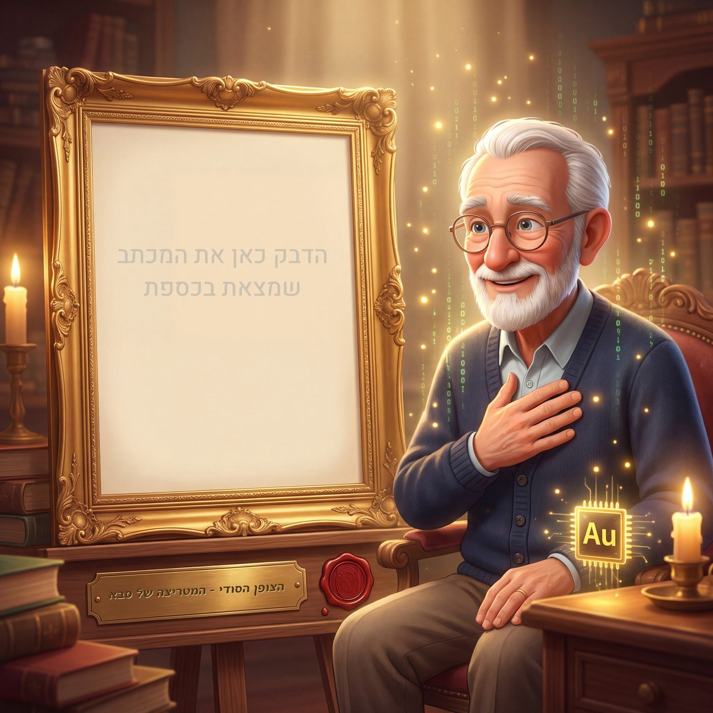
הלימודים של דרור
בזכות המסע, דרור למד באוניברסיטה הנדסת חומרים ונאנו-טכנולוגיה. הוא בחר בזה כדי שיוכל לממש את הפטנט שסבא השאיר לו – להפוך את הטכנולוגיה שסבא התחיל למוצר עבור מיליוני אנשים הסובלים מאותה מחלה.
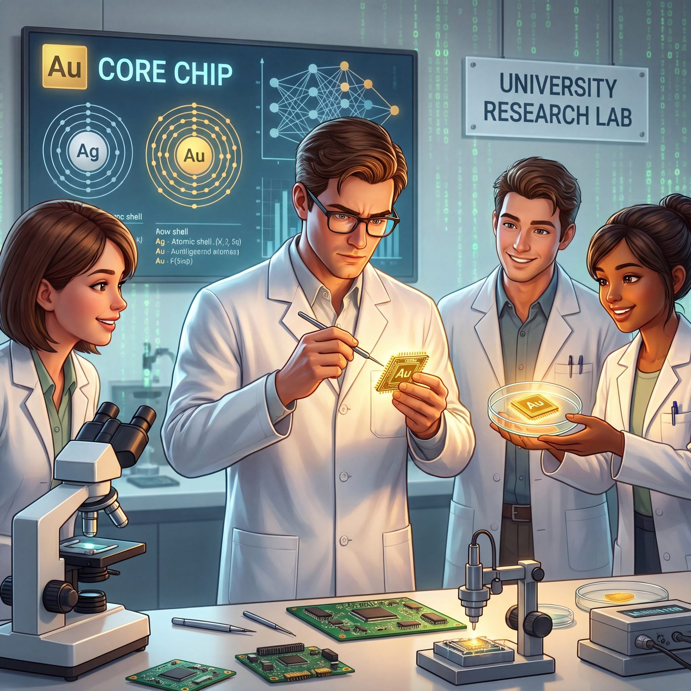
הסוף המרגש
דרור, המדען הצעיר, בא לבקר את סבא במכון. סבא אולי כבר לא זוכר את המטריצה, אך שדרור מראה לו את שבב הזהב שייצר, ניצוץ של הבנה נדלק בעיניו.
מעגל החיים עלה לשניהם כזיכרון משותף על המסע שעברו יחד.
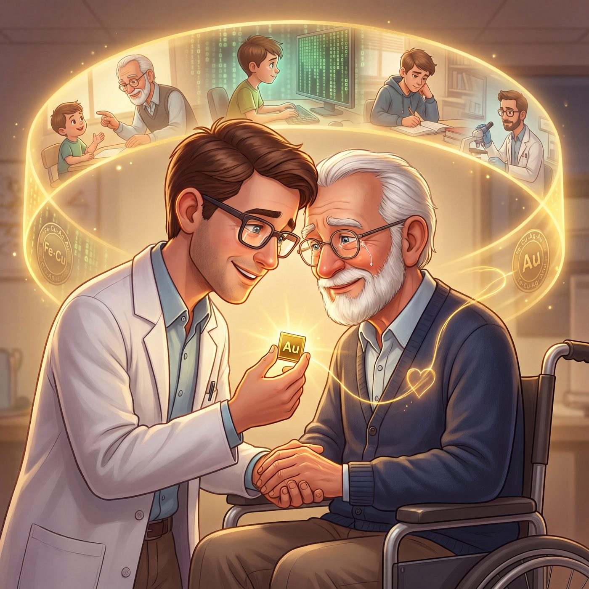
סוף דבר: הניצחון של דרור
דרור מסיים את לימודיו, הוא מפתח את "שבב הליבה" ומצליח לעצור את התדרדרות המחלה אצל סבא, ובעקר – הוא מבין שהזהב האמתי הוא הקשר שנוצר ביניהם דרך החידות.
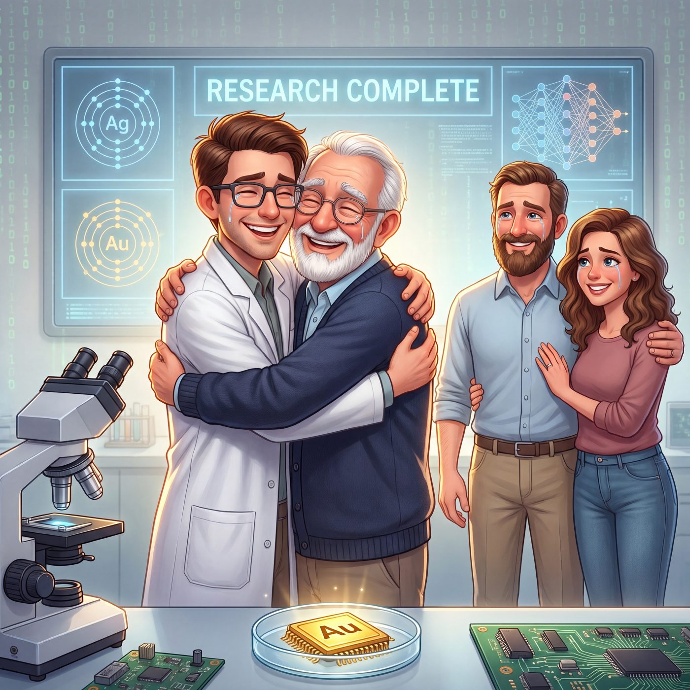
המעמד הנשגב: פרס נובל ו"זיכרון חיים"
שנים חלפו ודרור ניצב על בימת אולם טקס פרסי נובל הנערך מדי שנה בעיר שטוקהולם בשוודיה, מול קהל מריע ונפעם, הוא החזיק בידו את מדלית הזהב, המבהיקה מכל דבר בעולם. "הפרס הזה," אמר בקול רועד, "שייך לאדם אחד, סבא חיים שמעולם לא ויתר וחתר לתיקון עולם, העולם שלו והעולם שמסביבו."
"הוא היה המדען שלימד אותי שכימיה וטכנולוגיה הן שפה של יצירה ואהבה, בזכות החידות והמטריצה שלו, פיתחתי את השבב שמניע את התקווה לעתיד טוב יותר. קראתי לשבב 'זיכרון חיים', כי הוא מחבר בין המוח ללב ומחזיר לאדם את החיים בחזרה."
דרור הביט בשורה הראשונה, שם ישב סבא, חלש אך עיניו מאירות, בזכות השבב שהושתל בו, הוא זכה לראות את נכדו קוטף את הפירות.
הזהב, הכסף, הנחושת והברזל – יסודות שעליהם נבנתה התקווה – מזור עבור אנשים, תרופה וטיפול פורצי גבולות ההופכים את החומר לחיים חדשים.
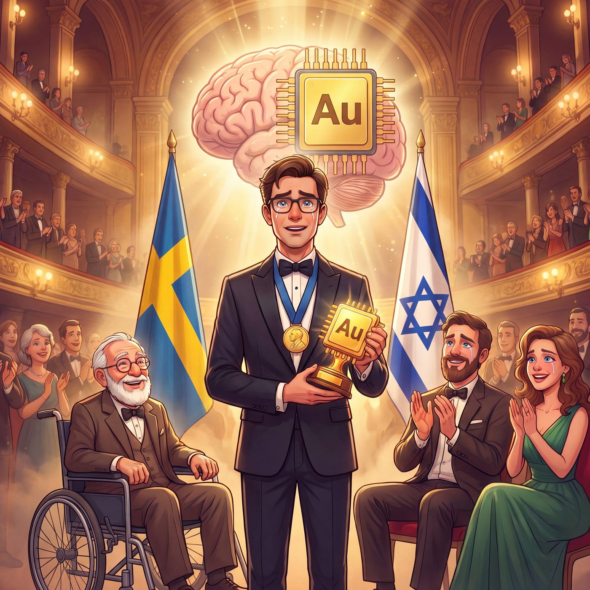
זהות היסודות
| יסוד | סמל | מס' אטומי | משקל סגולי |
|---|---|---|---|
| ברזל | Fe | 26 | 7.87 |
| נחושת | Cu | 29 | 8.96 |
| כסף | Ag | 47 | 10.49 |
| זהב | Au | 79 | 19.32 |


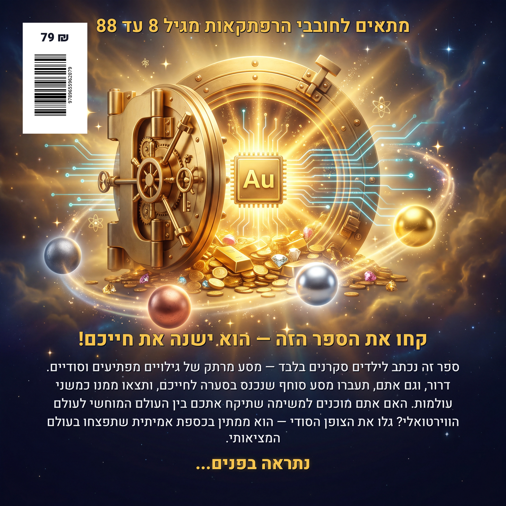